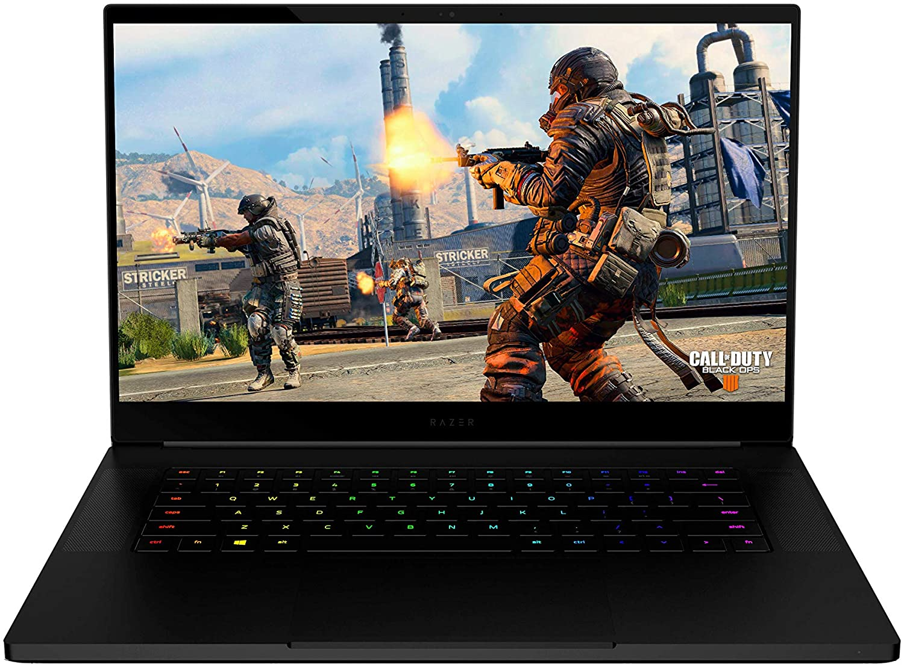

Razer Blade 15
Technical Specs
Processor : 9th Gen Intel i7/ 10th Gen Intel i7
Screen Size : 15.6 inch
True Tone : No
Storage : 256GB SSD+1TB HDD/ 256GB SSD+2TB HDD
Graphics : Nvidia GTX 1660 Ti/ Nvidia RTX 2060/ Nvidia RTX 2070 Max-Q/ Nvidia RTX 2070 super
RAM : 16GB/ 32GB
Keyboard : Keyboard with RGB backlight
Ports : 2 Thunderbolt 3, 2USB
Review
The Razer Blade 15 is the laptop for the gamers on the go. It is sleek and has a small form factor, yet maintaining great specs. The laptop that resembles the Macbook, in a good way. The sleek anodized aluminium unibody with great performing hardware makes it a compelling option for gamers who are looking for the understated look. There are two models: Base variant and Advanced Variant. the base model starts from $1600. The base variant blade 15 comes with an Intel 9th generation i7 H-series processor which has 6 cores. And for graphics, it has the Nvidia GTX 1660TI, which can handle most of the AAA titles easily at 60FPS. The laptop's design is its selling point, its anodized aluminium unibody, slim bezelless screen and a stealthy look makes it a wonderful option for gamers. Check out the Razer Blade 15 in the link below.
Amazon Link: View